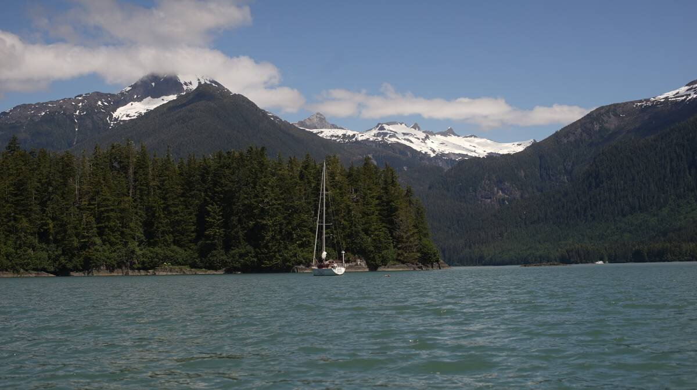

us se alaska

This is the stand in page for Southeast Alaska, for the trip we are currently undertaking starting June 1st 2024. We will update it with notes and photos when internet permits.
Anchorages and/or ports
Anchorages or ports we've visited and documented while in Southeast Alaska. We don't document all of the places we visit.


To see the route leading to Southeast Alaska, see Summer 2024 route in Western Canada.
Summer 2024 route(so far): Foggy Bay > Bar Harbor (Ketchikan)> Snug Cove > Ratz Harbor > Snug Cove > Frosty Bay > Berg Bay > Wrangell > Deception Point Cove > Petersburg > Ruth Island Cove > Portage Bay(Kupreanof Island)> Duck Point (Cape Fanshaw) > Chapin Bay(Admiralty Island) > Eva Islands(Baranof Island) > Baby Bear Bay(Baranof Island) > Piper Island > Sitka.
Other anchorage notes
Chapin Bay. Chapin Bay on Admiralty Island is a really nice stop, we stayed for 2 nights(23-24th of June), we were the only boat laying at anchor there. The holding is good, our anchor was set in 68 ft, it was well-shielded from south winds. We anchored just into the bight coming into the anchorage. While staying here, we saw a small deer walk on the beach, the bay has a lot of lion's mane jellyfish too.
Duck Point. We anchored south east of Whitney Island in Fanshaw Bay(in the pass between Whitney Island and the mainland), on the 22nd of June. The forecast was for NE winds that day, but it was very light. Anchorage there is good, but the water is deep, we dropped anchor in 67 ft at high tide. We were hesitant to come here at first because it appeared open to the weather, but the cape would likely block out SE winds(we didn't experience any while here). The holding was good, we had a small fishing boat join us at anchor later in the day.
Portage Bay. On the 21st of June we anchored in Portage Bay, with SW winds in the forecast we dropped the anchor in 40 feet near the north anchorage with 3 other boats(the most we've anchored with so far, including 2 sailboats). A fishing boat was anchored in the back of the bay. The entrance has a lot of kelp, more noticeable when the tide is flowing into the anchorage as they extend out further into the channel. We had no problem setting our anchor, but when we raised it we found a lot of kelp on the fluke. In SW wind, only the anchorage to the north east shields from swell. We drove around and found that the swell stopped in the lee of East Pt (you don't have to be that far in for it to stop, we weren't that well-tucked in there because of the other boats). We had no problem with current when entering, it was in our favor, but we left at low tide the next day before the turn of the current and had to fight 1-1 1/2 knots of current to exit, luckily, the pass is not long. The kelp that had bordered the channel the previous day was not as noticeable at low tide, they were all bunched up against the east shore.
Eva Islands. We had planned on anchoring somewhere in Hanus Bay but the current had already turned and so we didn't want to waste fuel fighting it, we turned into the Eva Islands anchorage instead. This anchorage is on the east of Peril Strait, it is protected from any south wind, but open to the north. The wind was in the south in Chatham Strait that day, so the waters were calm. We anchored in 72 feet at high tide, the shallower waters were too close to shore, we managed okay, and the anchor bit into the seafloor well. Note that a lot of small fishing boats like to fish near here, so you will get a lot of traffic wakes early in the morning, and all through the afternoon. The line of rock on the charts on the southeast side of the bay dries at low tide, it is a continuous rock wall. This place was great to anchor in, but would have been better if it wasn't for all the tiny biting flies. In the evening, we were under siege, they got in through any crack they could find. The next morning, we found hundred of bodies in the cockpit, all stuck near the companionway screen, hanging on the morning dew... they don't live long, but they're a pain while alive. The air was so thick with them that night that we couldn't leave the cabin, they all huddled near our window screens, trying to find a way inside. These tiny insects seem to emerge on mornings and evenings, on overcast days.
Baby Bear Bay. We arrived at the Baby Bear Bay entrance with the current running strong in the upper channels, when heading towards Sergius from the north. The waters near rapid point were very messy, with several back eddies, we had to fight a bit of current when turning into Baby Bear, which is just as well because there are many obstructions to avoid. The kelp was amassed on the rocks, marking their positions, we had plenty of depth in the entrance and found an anchoring spot just near the little NW bight in 40 ft(highest tide) - another boat was already anchored in the NW nook. Winds from the NW blew from the NW bight, but the next day when we left and arrived just a bit south of our anchor spot the NW wind penetrated from the gap just south of middle point. We left with a 5 ft tide, we encountered a lot of kelp just north of Bear Bay Island... there was no break in it, so we had to carefully plow through - not ideal, and a bit stressful because the wind was blowing hard at our bow, and there was still 1 knot of current against us (we planned to arrive at slack, but that means beating into the last of the current first, the tidal exchange was big that day, Sergius was running at 7 knots at its peak). If kelp had fouled our prop, we would have been in a really terrible position, we would have been pushed onto a reef. The kelp was clear on the day we arrived, but we arrived at max high tide, and the current was running south, when we left the current was running north and there was a bit less water... perhaps the current pushed the kelp further into the channel, and less water means they extend even more.
Sergius Narrows to Kakul Narrows. NW winds curl around the land and enter through Kakul Narrows, you will feel the force of it up to Yellow Pt. Near Suloia Pt, south of Sergius Narrows, a wind opposing the tide will kick us some sharp waves... the land compresses the wind and turned at 15-knot wind into 20-25 knots(it was also sunny/warm that day). We could not push towards Kakul Narrows, in the end, we had to abort and anchor NE of Piper Island. Our engine isn't powerful enough to carry us through, and even so, ocean swell enters Salisbury Sound west of Kakul Narrows, a recipe for disaster. We left Piper Island early the next morning, with grey skies, NW 10 kts and tame seas. We left with 2 knots of current with us, we had no issues motoring to Kakul Narrows. The sea was messy on the other side, but it was manageable, especially with sails up to balance the boat. We had the wind on the nose when exiting Kakul Narrows, but as soon as we pointed our bow toward Neva Strait we had it on the beam, then further sound it was downwind. The wind stayed with us all the way down the channel, weak at times, but enough to give us extra power.
Piper Island. We anchored on the NE end of Piper Island in 32 ft(high tide). Two other boats occupied the more sheltered spots, we were anchored near the shallow bar at the north west of the anchorage. A 15-20 NW wind was blowing that day, our spot was mostly sheltered from wind waves, but gusts would still penetrate the anchorage, it would swirl around the island. We had not planned on staying here, but we had to give up beating into heavy winds and waves to exit Kakul Narrows (see above notes). In all, it was a very good stop, not too deep for anchoring, with good holding, the only issue is the limited anchoring spots, had there been 3 boats at anchor we would not have had room(how much room there is depends on how/where everyone anchors). We entered the anchorage from the south, with many shallows to avoid, and left through the north the next day. A small FS cabin and a mooring(for the cabin) are on the north shore.
Neva and Olga Strait. When we exited Kakul Narrows, we sailed downwind down Neva Strait. While the current out of Kakul Narrows was running SW, the current in Neva Strait was running north. Our plan was to sail into it, to work against the opposing tide as is gradually lessened, to then ride the favorable tide out of Neva Strait and to then, hopefully, ride the weakening south current through Olga Strait before it turned against us. We were able to do this, even if at times we were only sailing at 2.3-2.6 knots. It was early in the morning, we had no big commercial and/or passenger ships or to worry about, only pleasure craft, skiffs and fishing boats, which are easy enough to work around. Some of the areas of the pass are narrow, but can still accommodate two boats, even if our boat in the moment spanned about 25 ft wide(because we were sailing wing on wing with the whisker out one way, and the fully opened main on the other). The current south of Olga Strait is not a hindrance. The wind stayed with us almost the whole way, but we did motor at some point to keep our speed up to get through the two straits on time. The current in this area all point in different directions, and when one weakens, the other won't necessarily be turning in your favor, they may already be running against you at high speed (mind you, this is for a slow boat, most motor boats don't care to beat into a peak current of 1.25 kts). We were able to sail from Piper Island to Sitka in the same day, we left at 0530 and arrived in Sitka at 1300.